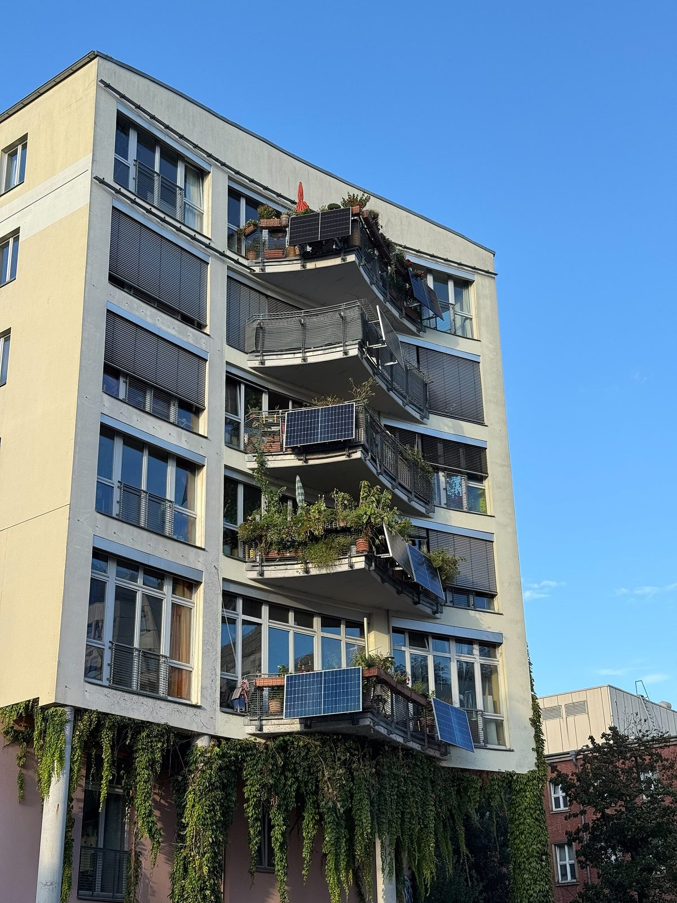

서호주, 호주 주 가운데 처음으로 플러그인 '베란다 태양광' 합법화 추진…안전기준 의견수렴 시작

에너지장관, 가구당 전기요금 연 240호주달러·배터리 함께 쓰면 500호주달러 절감 추산…지금은 팔 수는 있어도 꽂아 쓰면 불법, 법 개정 시점은 미정
서호주 주정부가 일반 콘센트에 꽂아 쓰는 플러그인 태양광과 플러그인 배터리를 호주 주 가운데 처음으로 합법화하기로 하고, 28일(현지 시각)부터 제품 안전기준에 대한 의견수렴에 들어간다. 앰버-제이드 샌더슨 서호주 에너지장관은 이날 경제단체 CEDA의 에너지 전망 오찬에서 이 계획을 발표하며, 가구당 전기요금을 한 해 240호주달러, 배터리를 함께 쓰면 500호주달러까지 줄일 수 있을 것으로 추산했다. 흔히 '베란다 태양광'으로 불리는 이 제품은 지금 호주에서 살 수는 있지만 콘센트에 연결해 쓰는 것은 허용되지 않으며, 법 개정 시점은 아직 정해지지 않았다. 샌더슨 장관은 자기 지붕이 없는 사람들이 그동안 값싼 태양광의 혜택에서 밀려나 있었다며 세입자와 아파트 주민이 가장 큰 수혜자가 될 것이라고 설명했다. 연방 에너지장관 크리스 보웬은 세입자가 이사할 때 장비를 그대로 가져갈 수 있다는 점을 장점으로 꼽으며 영국과 뉴질랜드도 도입에 나섰다고 말했고, 이 제품이 먼저 퍼진 독일에서는 약 10가구 중 1가구가 베란다·플러그인 태양광을 쓰고 있다.
시민에너지 관점
호주 시민단체 솔라 시티즌스는 세입자이거나 아파트에 사는 사람이 호주인의 3분의 1이 넘는다고 짚는데, 지붕을 가진 집만 햇빛 전기의 혜택을 누리는 구조가 그만큼 많은 사람을 에너지 전환 밖에 세워 두었다는 뜻이다. 콘센트에 꽂는 발전기가 화재·감전 위험을 키운다는 걱정이 나올 수 있지만, 서호주는 금지를 이어 가는 대신 안전기준부터 공개적으로 묻고 그 뒤에 법을 바꾸는 순서를 택했다. 이사할 때 들고 갈 수 있는 작은 발전기는 큰 투자나 집주인의 공사 허락 없이도 세입자가 스스로 전기를 만드는 첫걸음이며, 이런 작은 생산자가 늘어야 에너지 전환의 주인이 넓어진다. 가구 절반 이상이 아파트에 사는 우리도 베란다형 태양광을 지자체 보조사업 차원에 머물게 하지 말고, 안전 인증과 콘센트 연결 기준을 국가 제도로 정해야 한다.
출처: WAtoday 2026-10-27 Hamish Hastie 원문 보기
西オーストラリア州、豪州の州で初めてプラグイン「ベランダ太陽光」の合法化へ…安全基準の意見募集を開始
エネルギー相、1世帯あたり電気代を年240豪ドル、蓄電池と併用で500豪ドル節約と試算…現在は販売はできてもコンセントにつなぐのは違法、法改正の時期は未定
西オーストラリア州政府は、家庭用コンセントに差し込んで使うプラグイン太陽光とプラグイン蓄電池を豪州の州として初めて合法化する方針を決め、28日（現地時間）から製品の安全基準について意見募集を始める。アンバー＝ジェイド・サンダーソン州エネルギー相は同日、経済団体CEDAのエネルギー展望昼食会でこの計画を発表し、1世帯あたりの電気代を年240豪ドル、蓄電池と併用すれば500豪ドルまで減らせると試算した。一般に「ベランダ太陽光」と呼ばれるこの製品は、現在豪州で購入はできるもののコンセントにつないで使うことは認められておらず、法改正の時期はまだ決まっていない。サンダーソン氏は、自分の屋根を持たない人々がこれまで安い太陽光の恩恵から取り残されてきたとして、賃貸住民や集合住宅の住民が最も大きな受益者になると説明した。連邦のクリス・ボーエン・エネルギー相は、賃借人が引っ越しの際に機器をそのまま持って行ける点を利点に挙げ、英国とニュージーランドも導入に乗り出したと述べており、この製品が先に広がったドイツでは約10世帯に1世帯がベランダ・プラグイン太陽光を使っている。
市民エネルギーの視点
豪州の市民団体ソーラー・シチズンズは、賃貸や集合住宅に住む人が豪州人の3分の1を超えると指摘しており、屋根を持つ家だけが太陽光の恩恵を受ける仕組みが、それだけ多くの人をエネルギー転換の外に置いてきたことを意味する。コンセントに差す発電機が火災や感電の危険を高めるとの懸念もあり得るが、西オーストラリア州は禁止を続けるのではなく、まず安全基準を公に問い、その後に法を改める順序を選んだ。引っ越し先へ持って行ける小さな発電機は、大きな投資や家主の工事許可がなくても賃借人が自ら電気をつくる第一歩であり、こうした小さな生産者が増えてこそエネルギー転換の担い手が広がる。世帯の半分以上がマンションに住む韓国でも、ベランダ型太陽光を自治体の補助事業の段階にとどめず、安全認証とコンセント接続の基準を国の制度として定めるべきだ。
出典: WAtoday 2026-10-27 Hamish Hastie 原文を読む
西澳大利亚州将成为澳大利亚首个推动即插即用"阳台光伏"合法化的州…启动安全标准意见征集
能源部长估算每户每年可省电费240澳元、配合电池可省500澳元…目前可以销售但插上使用属违法，修法时间未定
西澳大利亚州政府决定在澳大利亚各州中率先将插入普通插座即可使用的即插即用光伏和即插即用电池合法化，并从28日（当地时间）起就产品安全标准征求意见。州能源部长Amber-Jade Sanderson当天在经济团体CEDA的能源展望午餐会上公布这一计划，估算每户每年可减少电费240澳元，若同时使用电池则最多可减少500澳元。这类通称"阳台光伏"的产品目前在澳大利亚可以买到，但不允许接入插座使用，修法时间尚未确定。Sanderson表示，没有自家屋顶的人一直被排除在廉价光伏的好处之外，租户和公寓居民将是最大的受益者。联邦能源部长Chris Bowen则把租户搬家时可以带走设备列为优点之一，并表示英国和新西兰也已着手推行；在这类产品率先普及的德国，约每10户中就有1户使用阳台或即插即用光伏。
市民能源视角
澳大利亚民间团体Solar Citizens指出，租房或住在公寓的人超过澳大利亚人口的三分之一，这意味着只有拥有屋顶的家庭才能享受阳光电力的结构，把同样多的人挡在了能源转型之外。有人会担心插座式发电设备增加火灾和触电风险，但西澳大利亚没有继续禁止，而是选择先公开征求安全标准意见、再修改法律的顺序。搬家时可以带走的小型发电设备，是租户无需大笔投资或房东施工许可就能自己发电的第一步，这样的小生产者越多，能源转型的主人就越广泛。在一半以上家庭住在公寓的韩国，也不应让阳台光伏停留在地方政府补贴项目层面，而应把安全认证和插座接入标准定为国家制度。
来源: WAtoday 2026-10-27 Hamish Hastie 查看原文
Western Australia moves to become the first Australian state to legalise plug-in balcony solar, opening consultation on safety standards
Energy minister estimates households could save A$240 a year on power bills, or A$500 with a battery; the kits can be sold now but not legally plugged in, and no date has been set for legislation
The Western Australian government has decided to make plug-in solar panels and plug-in batteries, which connect to an ordinary power socket, legal ahead of every other Australian state, and will open consultation on safety standards for the products on Wednesday 28 October, local time. Energy Minister Amber-Jade Sanderson is unveiling the plan at a CEDA energy outlook lunch that day, estimating that households could cut their power bills by A$240 a year, or by up to A$500 when the panels are paired with a battery. The kits, commonly known as balcony solar, can already be bought in Australia but may not legally be plugged in, and no date has yet been set for the legislation. Sanderson said people who do not own their roof have long been shut out of the benefits of cheap solar, and that renters and apartment residents stand to gain the most. Federal Energy Minister Chris Bowen has pointed out that renters can take the kits with them when they move and noted that the United Kingdom and New Zealand are also adopting them, while in Germany, where the products first took off, about one in ten households has balcony or plug-in solar.
Citizen Energy View
The Australian advocacy group Solar Citizens notes that more than a third of Australians rent or live in apartments, which means a system that lets only roof owners enjoy solar power has left that many people outside the energy transition. Some will worry that socket-connected generators raise the risk of fire or electric shock, but rather than keep the ban in place, Western Australia has chosen to consult openly on safety standards first and change the law afterwards. A small generator that can move house with its owner is a first step for tenants to produce their own power without a large investment or a landlord's permission for building work, and the more such small producers there are, the wider the ownership of the energy transition becomes. Korea, where more than half of households live in apartments, should likewise move balcony solar beyond local subsidy schemes and set national rules for safety certification and socket connection.
Source: WAtoday 2026-10-27 Hamish Hastie Read the original